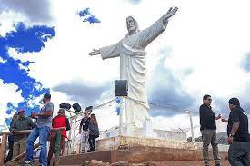
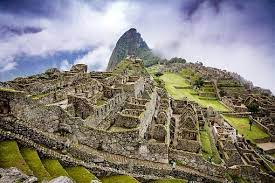
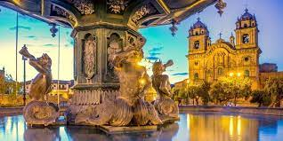
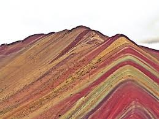
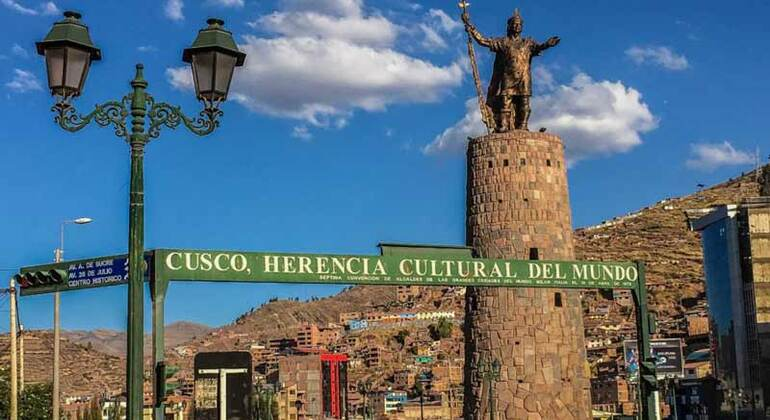
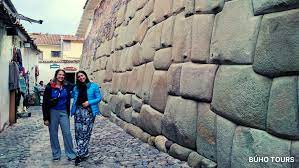
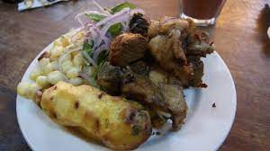
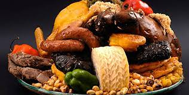
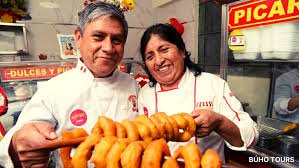

The White Christ Statue
Machu Picchu ruins
The Plaza de Armas of the city.
The Rainbow Mountain
The Statue of the Inca Pachacutec
The Stone of the Twelve Angles and other Inca stones
The Chiriuchu, traditional food of Cusco
The Pork Rind (Chicharrón)
THe Sweet Picarones
